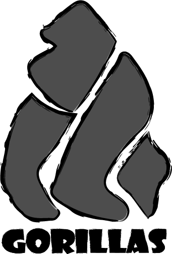

About Me
My name is Dylan Conlon, and I sure do love gorillas. I wake up every morning and the first thing on my mind is always the gorilla. They are such majestic creatures, and should always be regarded as such. I figured that since all I do everyday is think about gorillas, why not make an entire website about them? I decided to make a website entirely devoted to the two subspecies of gorilla, the mountain and lowland. They are just like humans, except that they are a lot bigger, hairier, and are not human.